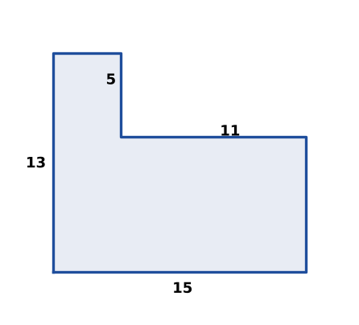
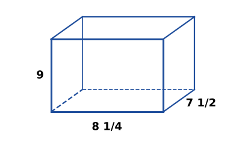

Which is the better buy: 6 ounces for $6.12 or 10 ounces for $6.58?MULTIPLE CHOICE
(A)6 ounces for $6.12
(B)10 ounces for $6.58
(C)They cost the same per ounce
(D)Not enough information
Find the mean absolute deviation (MAD) of the data: 3, 16, 17, 1, 18, 11MULTIPLE CHOICE
To answer the statistical question “How tall are the players on the basketball team?”, a student collected these data: 11, 12, 10, 8, 6, 9, 7. What is the median, a typical value?MULTIPLE CHOICE
A rectangle has vertices (-2, -2), (3, -2), (3, 1), (-2, 1). What is its perimeter?MULTIPLE CHOICE
(A)8 units
(B)16 units
(C)20 units
(D)15 units
A right triangle has legs 12 1/2 ft and 16 ft. Find its area.MULTIPLE CHOICE
(A)50 ft²
(B)100 ft²
(C)200 ft²
(D)28 1/2 ft²
Data: 67, 30, 29, 25, 27, 24, 29, 97. The value 97 is an outlier. By how much does the mean decrease when the outlier is removed?MULTIPLE CHOICE
A machine fills 7 bottles per minute. How many bottles does it fill in one hour?MULTIPLE CHOICE
(A)67 bottles
(B)7/60 bottles
(C)420 bottles
(D)700 bottles
Find the area of the L-shaped figure. The outer rectangle is 15 m by 13 m, and a 11 m by 5 m corner piece is cut out.MULTIPLE CHOICE

(A)56 m²
(B)195 m²
(C)140 m²
(D)250 m²
Three vertices of a rectangle are (-3, -5), (-2, -5) and (-2, -3). Find the fourth vertex, and then the perimeter of the rectangle in units.MULTIPLE CHOICE
A box with no top is 14 in. long, 4 in. wide and 9 in. tall. How many square inches of cardboard cover its outside?MULTIPLE CHOICE
Which is the better buy: 6 ounces for $5.66 or 16 ounces for $18.40?MULTIPLE CHOICE
(A)6 ounces for $5.66
(B)16 ounces for $18.40
(C)They cost the same per ounce
(D)Not enough information
Find the volume of a rectangular prism 8 1/4 in. long, 7 1/2 in. wide, and 9 in. tall.MULTIPLE CHOICE

(A)61 7/8 in³
(B)556 7/8 in³
(C)407 1/4 in³
(D)24 3/4 in³
Select ALL problems that are matched with the correct answer.SELECT ALL THAT APPLY
55% of the seats in a theater are filled. If there are 400 in all, how many is that? → 220
5% of the seats in a theater are filled. If there are 400 in all, how many is that? → 20
20% of the seats in a theater are filled. If there are 300 in all, how many is that? → 20
65% of the students in a school ride the bus. If there are 400 in all, how many is that? → 2600
75% of the songs on a playlist are pop songs. If there are 400 in all, how many is that? → 3000
70% of the students in a school ride the bus. If there are 200 in all, how many is that? → 140
Select ALL problems that are matched with the correct answer.SELECT ALL THAT APPLY
Find the area of a triangle with base 15 cm and height 17 cm. → 32 cm²
Find the area of a triangle with base 23 cm and height 13 cm. → 149.5 cm²
Find the area of a triangle with base 6 cm and height 3 cm. → 18 cm²
Find the area of a triangle with base 16 cm and height 3 cm. → 24 cm²
Find the area of a triangle with base 18 cm and height 11 cm. → 99 cm²
Find the area of a triangle with base 23 cm and height 5 cm. → 115 cm²
Select ALL problems that are matched with the correct answer.SELECT ALL THAT APPLY
Find the area of a rectangle with length 10 cm and width 4 cm. → 40 cm²
Find the area of a square with side 4 cm. → 8 cm²
A rhombus has diagonals of 14 m and 20 m. Find its area. → 68 m²
A kite has diagonals of 11 m and 4 m. Find its area. → 22 m²
A kite has diagonals of 16 m and 6 m. Find its area. → 48 m²
Find the area of a rectangle with length 20 cm and width 16 cm. → 36 cm²
On a map, 2 inches represent 30 miles. Two towns are 15 inches apart on the map. A car drives between them at 45 miles per hour. How many hours does the trip take?SHORT ANSWER
Answer:
Plant heights (cm) — Group A: 20, 24, 6, 11, 24; Group B: 5, 14, 19, 11, 26. How much greater is the mean height of Group A than Group B?SHORT ANSWER
Answer:
A box plot of test scores has minimum 38, lower quartile 43, median 46, upper quartile 52 and maximum 60. How much greater is the range than the interquartile range?SHORT ANSWER
Answer:
Nia's first 3 test scores are 78, 78, 91. What score does Nia need on test 4 to have a mean of exactly 84?SHORT ANSWER
Answer:
A storage box. A storage box is a rectangular prism 2 1/2 feet long, 2 feet wide and 1 1/2 feet tall.CONSTRUCTED RESPONSE · 4 POINTS
(a) What is the volume of the box?
(b) What is the area of the bottom of the box?
(c) What is the surface area of the box?
(d) How many cubes with edges of 1/2 foot fill the box?